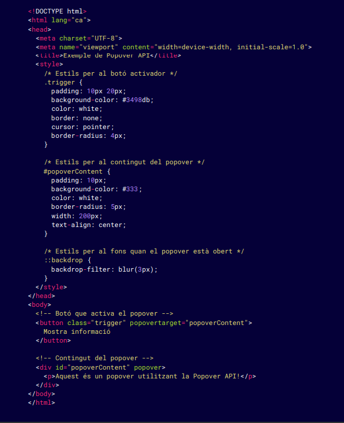

La Popover API es una funcionalidad reciente que permite a los desarrolladores crear contenido emergente (popovers) de manera nativa, utilizando solo HTML y CSS, sin necesidad de JavaScript. Esta API facilita la creación de componentes como menús, sugerencias o notificaciones que aparecen sobre el contenido existente.

Explicación del ejemplo: